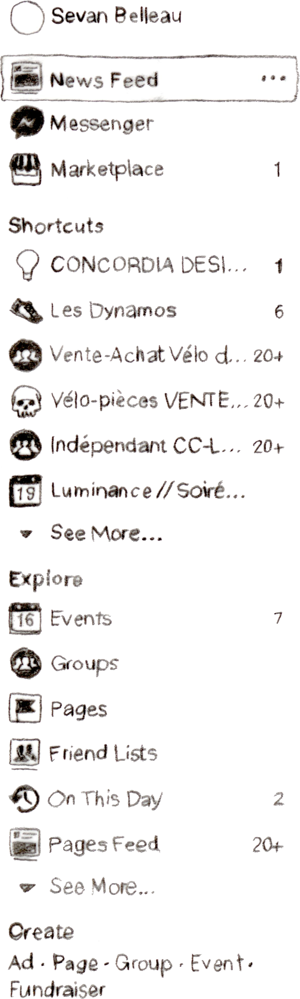

<form INFORMATION ABOUT WEBSITE>
  <!-- ************************************************************************

  DART 450, Winter 2018
  BrutalBook
  Sévan Belleau

  Brutalist Websites (to be experienced on a 15in screen for best performance)
  –
  In its ruggedness and lack of concern to look comfortable or easy,
   Brutalism can be seen as a reaction by a younger generation to the lightness,
   optimism,
  and frivolity of today's web design.
  –
  This is the definition given by the website brutalistwebsites.com on what brutalist websites are.
  The way I perceive it is that they remove all fluff and experiment with user interaction.
  Either by making things extremely simple or sometimes by making them incredibly overloaded.
  There is no right or wrong in brutal websites but there is exploration. This is where
  BrutalBook is born, in the middle of a love story between doubt and discovery.


  We all live with social media, or at least the vast majority of us do and while we use it we rarely question how it is fed to us. Because of the constant stream of information, we often forget to think about the container in which this information is being served to us. Why is it this way? If I had to reflect on the social media I use there would be Facebook, Instagram, Tumblr, Youtube and Reddit. All websites that use a lot of squares and rectangles to encapsulate their information and all websites that display information linearly, from top to bottom. Arguably Instagram has been trying things by changing the order of the elements displayed and removed the chronology of elements but most often, newest is highest and most popular is shown again and again.

  BrutalBook will explore the structure of Facebook. It will abstract the elements shown
  and allow the user to question the frame in which he/she/they exist and interact.
  I use my own facebook to create a feeling of perversion, as if someone were looking through a window into someone's room or looking at a phone
  that was left unlocked and un-attended to. The brutal honesty/simplicity of the posts shown contrasts with the given ability to post anything
  the user wants and in a setting where the boundaries are not obvious, one might imagine these words posted to a real facebook. This "life like" feeling
  is also amplified by a few setInterval functions that act as friends posting on the social media in real time.

  By merging web interventions, design and illustration, this website hopes to create an un-easy comfort for all users so they recognize the familiar shapes they are encoutering
  but are allowed and encourage to question them. Possibly due to the large amount of time I have stared at this program myself, I have come to strongly doubt the pertinance of
  facebook in my everyday routine and the meaningless posts shown here that repeat themselves are a large critism of how redundant facebook truly is. While simple and bare, this
  website is also meant to recreate the feeling of desperation a user might feel when constantly leaving facebook and returning shortly after with hopes of interesting news or
  a friendly interaction never to be found. Comparable to being hungry and looking in the fridge multiple time, always hoping something new will appear that will justify the time spent looking.


  ************************************************************************ -->
</form>

<!DOCTYPE html>

<html lang="en">

<head>

<form LINKS>
  <meta http-equiv="content-type" content="text/html; charset=utf-8">

  <title>BrutalBook</title>

  <link rel="stylesheet" type="text/css" href="css/style.css" />

  <!-- Include jQuery via the CDN -->
  <script src="https://ajax.googleapis.com/ajax/libs/jquery/3.2.1/jquery.min.js"></script>

  <!-- Uncomment the lines below to include jQuery UI -->
  <link rel="stylesheet" href="https://ajax.googleapis.com/ajax/libs/jqueryui/1.12.1/themes/smoothness/jquery-ui.css">
  <script src="https://ajax.googleapis.com/ajax/libs/jqueryui/1.12.1/jquery-ui.min.js"></script>

</form>

</head>

<!-- To simplifiy navigation, all elements have been classified by their relative position on the webpage -->

<body>
  
<form Top Comments>
  <!-- The blue bar needs to be removed/ drawn
  There should be an input field for the searchBar -->
</form>
<div id="allTopThings">
  <div class="blueBar"></div>
      <div class="facebookBackground"></div>
      
      
    </div>
  </div>


<form Left Comments>

</form>
<div id="allLeftThings">
  <div class="leftSide">
    
  </div>
</div>


<form Middle Comments>

</form>
<div id="allMiddleThings">

 <div class="outsideOfTheMiddleElements">
   
   
 </div>
  <div class="middle">
    <div class="make" id="make">

      <form class="firstInput" id="postForm">
        <input type="text" name="post" class="onYourMind" placeholder="What's on your mind?" id="postInput" autocomplete="off">
        <button id="submitButton" class="submitButton"></button>
      </form>
    </div>


    
    
    
    
    

  </div>
</div>


<form Right Comments>
  <!-- Stories could be added if time allows for it
  Privacy easter egg could be fun
  Birthday section could be created to link to Famous birthday website
   -->
</form>
<div id="allRightThings">
  <div class="rightSide">
    
    
  </div>

<script src="js/script.js"></script>

</body>

</html>
